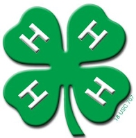
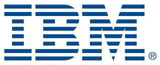
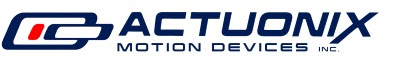
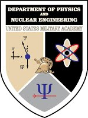
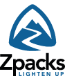
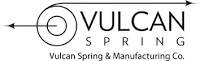
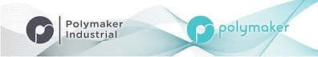

|  |
The 4H clubs are doing a fantastic jobs at reaching young
people and sharing their passion and knowledge. A big thanks
to the Westchester Extension of the Cornell Cooperative, our
4H club in the state of New York. You can learn more about
their wonderful programs here. 4-H is now supporting us for
four years in a row. Big thanks!
|
|  |
IBM is a dominant computer manufacture which leads the
field in computer architecture and its applications, for
example to the field of cognitive and big data. It is a very
generous sponsor of our program, a testament of its long term
vision for building the engineers and thoughtful leaders. You
can learn more about IBM research here. IBM is now supporting
us for four years in a row. Big thanks!
|
 |
Igus is a renowned manufacturer of high-tech polymer
bearings. It has products that are very suitable for FTC and
FRC. Our team appreciated their expertise and their generous
in-kind donation of linear slides. You can learn more about
their products here, and their linear slides here. Igus is now
supporting us for three years in a row. Big thanks!
|
|  |
Actuonix is a manufacturer of linear actuators including
linear servos. They generously agreed to sponsor us this year,
to aid us in our goal of promoting and supporting an FLL team
in Mount Vernon. We are incredibly grateful for their support.
Actuonix has been supporting us for the first time this year.
Big thanks!
|
 |
Overleaf is a free, collaborative, cloud-based LaTeX editor
which makes the process of writing, editing and publishing
scientific documents quicker and easier. Overleaf's
award-winning collaboration technology is now in use by over
2.9 million researchers, students and technical writers in
institutions, labs and industry worldwide. It’s simple and
intuitive to use – all you need is a web browser. We use their
awesome product to write our Engineering Notebook. You too can
take your notebook to the next level using their product for
free. Visit them here. Overleaf started sponsoring us this
year. Big thanks!
|
|  |
The U.S. Military Academy at West Point is the stellar
institution training Cadets to become leaders of character and
prepared for a career of professional excellence and service
to the Nation as an officer in the United State Army. They
have outstanding centers of excellence, including Electrical
Engineering and Computer Science with a robotic program as
well as Physics and Nuclear Engineering. You can learn more
about this outstanding institution here. The Department of
Physics has been very generous to us, providing some of their
expertise to our team, e.g. with regards to machining complex
aluminum parts. Big thanks!
|
|  |
Zpacks is a high-tech outdoor equipment web store known for
outstanding tents, backpacks, and clothing. They use
ultra-strong Dyneema Composite Fabrics that is used, among
others, for America Cup's sails. They provided us with strong
Dyneema Cords that does not stretch, is light and strong, and
has an excellent sheathing. Their cords lifted us all the way
to the world championships. Learn more about the company here,
and their strings here. Zpacks is now supporting us for three
year in a row. Big thanks!
|
|  |
Vulcan Spring makes great linear springs that are good
enough for NASA, and they will make your robot rock. We
greatly appreciated their in-kind donation, which powered our
robot all the way to Worlds. You can learn more about this
company here. Vulcan Springs is now supporting us for three
year in a row. Big thanks!
|
|  |
Polymaker is an amazing company that makes some of the best
3D printer filaments out there. Their PC-MAX filament is
essentially printable Polycarbonate filament. We use PC-MAX
everywhere where structural strength is needed, such as for
our swerve drive. If your printer supports ABS, it will easily
print PC-MAX, except that your part will be 10x stronger.
Check our part here. Learn more about the company here, and
their PC-MAX filament here. Polymaker sponsored us last year
for the first time. Big thanks!
|